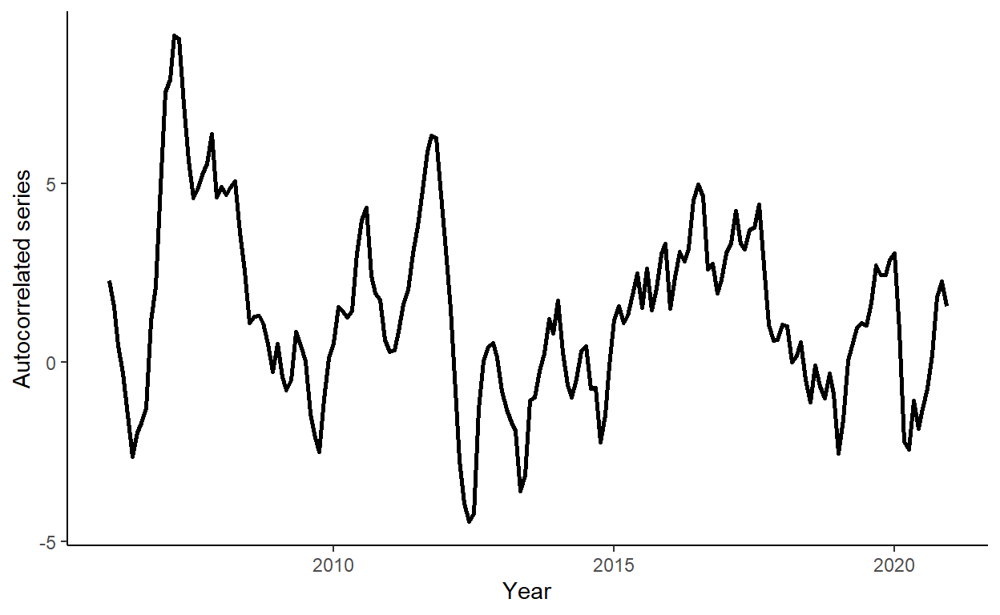
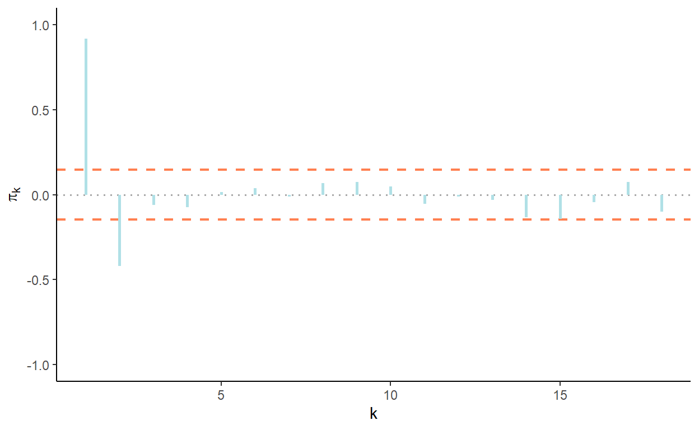
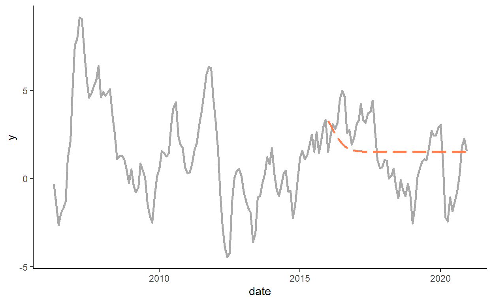

Tutorial 6: Autoregression
In this tutorial, we will generate autocorrelated series, we will apply an information criterion to select a suitable autoregressive model, we will obtain and compare one-step-ahead forecasts from competing models using a rolling window procedure, and we will generate one set of multi-step forecasts to illustrate the convergence to unconditional mean of the series. To run the code, the data.table and ggplot2 packages need to be installed and loaded.
Let’s generate a time series that follows an AR(2) process: \(y_{t} = 1.2y_{t-1}-0.3y_{t-2}+e_{t}\), where \(e_{t} \sim N(0,1)\), for \(t=1,\ldots,180\).
n <- 180
set.seed(7)
e <- rnorm(n,0,1)
y <- rep(NA,n)
y[1] <- e[1]
y[2] <- 1.2*y[1]+e[2]
for(i in 3:n){
y[i] <- 1.2*y[i-1]-0.3*y[i-2]+e[i]
}Generate a vector of arbitrary dates (e.g., suppose we deal with a monthly series beginning from January 2006), and store these dates along with \(y\) in a data.table, call it ‘dt’. Then plot \(y\) against \(date\) using a ggplot function.
date <- seq(as.Date("2006-01-01"),by="month",along.with=y)
dt <- data.table(date,y)
ggplot(dt,aes(x=date,y=y))+
geom_line(size=1)+
labs(x="Year",y="Autocorrelated series")+
theme_classic()
Generate and plot the autocorrelation function and the partial autocorrelation function for lags 1 through 18.
acf_vec <- c(acf(dt$y,lag.max=18,plot=F)$acf[-1])
pacf_vec <- c(pacf(dt$y,lag.max=18,plot=F)$acf)
sd_rho <- sqrt(1/n)
acf_dt <- data.table(lags=1:18,acf=acf_vec,pacf=pacf_vec)
ggplot(acf_dt,aes(x=lags,y=acf)) +
geom_hline(yintercept=0,color="darkgray",linetype=3,size=.6) +
geom_hline(yintercept=c(-1.96*sd_rho,1.96*sd_rho),color="coral",linetype=2,size=.8) +
geom_segment(aes(xend=lags,yend=0),color="powderblue",size=1)+
labs(x="k",y=expression(rho[k]))+
coord_cartesian(ylim=c(-1,1))+
theme_classic()ggplot(acf_dt,aes(x=lags,y=pacf)) +
geom_hline(yintercept=0,color="darkgray",linetype=3,size=.6) +
geom_hline(yintercept=c(-1.96*sd_rho,1.96*sd_rho),color="coral",linetype=2,size=.8) +
geom_segment(aes(xend=lags,yend=0),color="powderblue",size=1)+
labs(x="k",y=expression(pi[k]))+
coord_cartesian(ylim=c(-1,1))+
theme_classic()
Calculate Akaike Information Criteria (AIC) and Schwarz Information Criteria (SIC) for AR(1), AR(2), and AR(3) models, using all observations in the series,31 to decide on the optimal lag length.
dt[,`:=`(y1=shift(y),y2=shift(y,2),y3=shift(y,3))]
dt <- dt[complete.cases(dt)]
ic_dt <- data.table(k=c(1:3),AIC=NA,SIC=NA)
for(i in 1:nrow(ic_dt)){
fmla <- as.formula(paste("y",paste0("y",c(1:i),collapse="+"),sep="~"))
reg <- lm(fmla,data=dt)
ic_dt$AIC[i] <- log(sum(reg$residuals^2))+2*(i+1)/nrow(dt)
ic_dt$SIC[i] <- log(sum(reg$residuals^2))+log(nrow(dt))*(i+1)/nrow(dt)
}
ic_dt## k AIC SIC
## 1: 1 5.196230 5.232119
## 2: 2 5.012482 5.066315
## 3: 3 5.019644 5.091422Generate a sequence of one-step-ahead forecasts from random walk, as well as AR(1), AR(2), and AR(3), using the rolling window scheme, where the first rolling window ranges from the beginning of the sample to December 2015 so that the first forecast is made for January 2016.
R <- which(dt$date==as.Date("2015-12-01"))
P <- nrow(dt)-R
dt$rw <- NA
dt$a1 <- NA
dt$a2 <- NA
dt$a3 <- NA
for(i in 1:P){
dt$rw[R+i] <- dt$y[R+i-1]
reg1 <- lm(y~y1,data=dt[i:(R+i-1)])
reg2 <- lm(y~y1+y2,data=dt[i:(R+i-1)])
reg3 <- lm(y~y1+y2+y3,data=dt[i:(R+i-1)])
dt$a1[R+i] <- reg1$coefficients[1]+reg1$coefficients[2]*dt$y[R+i-1]
dt$a2[R+i] <- reg2$coefficients[1]+reg2$coefficients[2]*dt$y[R+i-1]+reg2$coefficients[3]*dt$y[R+i-2]
dt$a3[R+i] <- reg3$coefficients[1]+reg3$coefficients[2]*dt$y[R+i-1]+reg3$coefficients[3]*dt$y[R+i-2]+reg3$coefficients[4]*dt$y[R+i-3]
}Calculate the RMSFE measures for all considered models.
dt[,`:=`(e_rw=y-rw,e_a1=y-a1,e_a2=y-a2,e_a3=y-a3)]
rmsfe_rw <- sqrt(mean(dt$e_rw^2,na.rm=T))
rmsfe_a1 <- sqrt(mean(dt$e_a1^2,na.rm=T))
rmsfe_a2 <- sqrt(mean(dt$e_a2^2,na.rm=T))
rmsfe_a3 <- sqrt(mean(dt$e_a3^2,na.rm=T))
rmsfe_rw## [1] 0.9650222## [1] 0.9375063## [1] 0.9205311## [1] 0.9395883Using the first rolling window as the information set, generate a single set of the multi-step-ahead point forecast for the remaining out-of-sample periods using the AR(2) model.
dt[,`:=`(a2_multi=y)]
reg2m <- lm(y~y1+y2,data=dt[1:R])
for(i in 1:P){
dt$a2_multi[R+i] <- reg2m$coefficients[1]+reg2m$coefficients[2]*dt$a2_multi[R-1+i]+reg2m$coefficients[3]*dt$a2_multi[R-2+i]
}
dt[1:R]$a2_multi <- NA
ggplot(dt,aes(x=date))+
geom_line(aes(y=y),color="darkgray",size=1)+
geom_line(aes(y=a2_multi),color="coral",na.rm=T,size=1,linetype=5)+
theme_classic()
Note that after generating lagged dependent variables we discard first three rows of the data to ensure that information criteria apply the same \(T\) across the models.↩︎